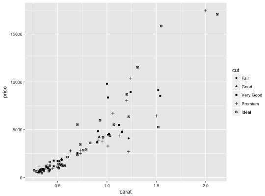
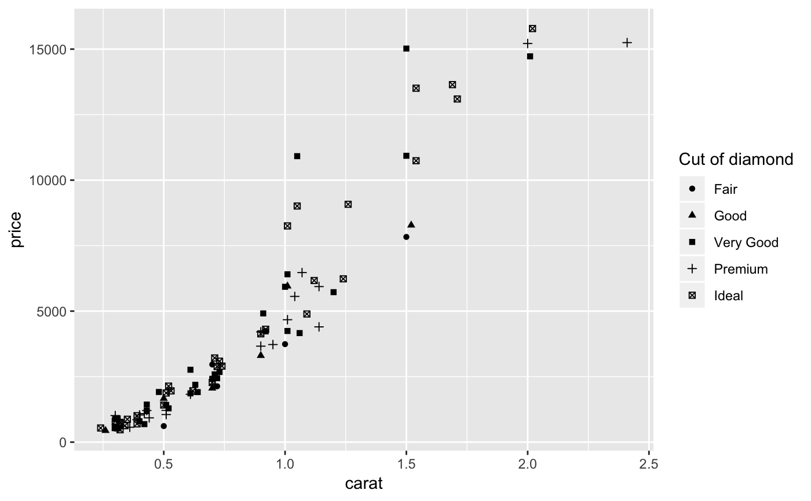
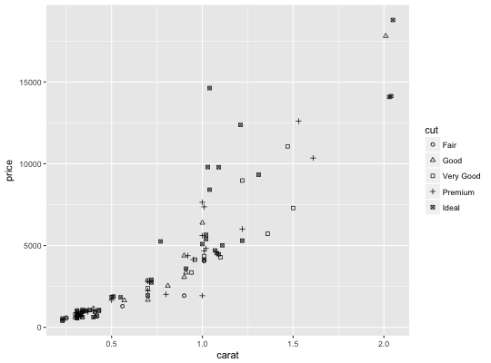
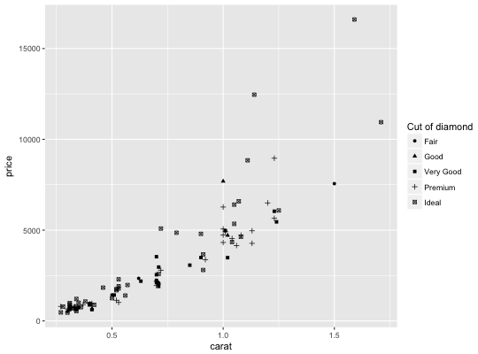
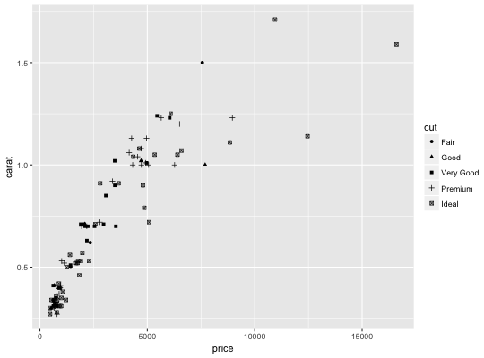
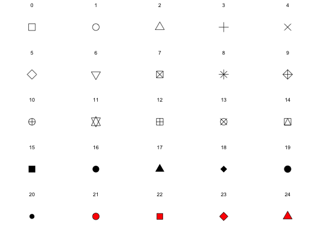

scale_shape maps discrete variables to six easily discernible shapes.
If you have more than six levels, you will get a warning message, and the
seventh and subsequence levels will not appear on the plot. Use
scale_shape_manual to supply your own values. You can not map
a continuous variable to shape.
scale_shape(..., solid = TRUE)
common discrete scale parameters: name, breaks,
labels, na.value, limits and guide. See
discrete_scale for more details
Should the shapes be solid, TRUE, or hollow,
FALSE?
dsmall <- diamonds[sample(nrow(diamonds), 100), ] (d <- ggplot(dsmall, aes(carat, price)) + geom_point(aes(shape = cut)))d + scale_shape(solid = TRUE) # the defaultd + scale_shape(solid = FALSE)d + scale_shape(name = "Cut of diamond")# To change order of levels, change order of # underlying factor levels(dsmall$cut) <- c("Fair", "Good", "Very Good", "Premium", "Ideal") # Need to recreate plot to pick up new data ggplot(dsmall, aes(price, carat)) + geom_point(aes(shape = cut))# Show a list of available shapes df_shapes <- data.frame(shape = 0:24) ggplot(df_shapes, aes(0, 0, shape = shape)) + geom_point(aes(shape = shape), size = 5, fill = 'red') + scale_shape_identity() + facet_wrap(~shape) + theme_void()